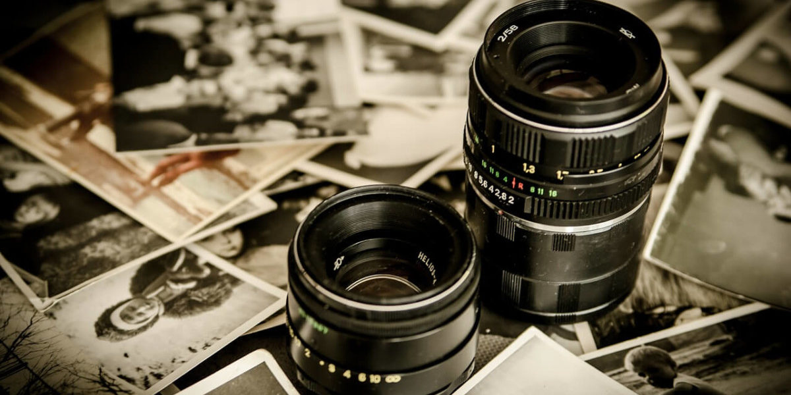

O Vacation photo é um dos sites de fotografia mais popular da internet,
com um acervo de bilhões de fotos compartilhadas. A plataforma permite
hospedar imagens em seu próprio perfil e até compartilhar comentarios, funcionando
tanto como um banco de imagens, quanto uma rede social.
Quero que em muitos anos, quando pegar no álbum e começar a olhar através das fotografias,
sinta as mesmas emoções quentes e excitantes que durante a minha sessão fotográfica. Reserve
uma sessão fotográfica e deixe-me captar os momentos mais felizes e preciosos da sua vida.
Serviço de qualidade. O melhor serviço. Parceiro profissional. Bônus para clientes. Atendimento
individual. Interface moderna.
